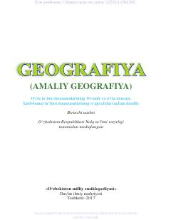

1G10-sinf o'quvchilari uchun geografiya fanidan o'quv qo'llanma.
Ushbu darslik umumiy o'rta ta'lim maktablarining 10-sinf o'quvchilari uchun mo'ljallangan bo'lib, geografiya fanining nazariy asoslari, tabiiy va ijtimoiy-iqtisodiy geografiya tarmoqlarini qamrab oladi. Kitobda geografik qobiq, landshaftshunoslik, geoekologiya hamda ijtimoiy-iqtisodiy geografiyaning asosiy yo'nalishlari batafsil yoritilgan.